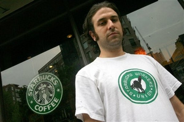

Starbucks' Union Blues
Submitted on Wed, 01/07/2009 - 4:32am
Disclaimer - The opinions of the author do not necessarily match those of the IWW. This article is reposted in accordance to Fair Use guidelines.

By Moira Herbst - BusinessWeek, December 31, 2008
Starbucks (SBUX), once the undisputed leader in premium-price caffeine fixes, has long cultivated a corporate image for social responsibility, environmental awareness, and sensitivity to workers' rights. Now that carefully crafted reputation is under assault, thanks to a messy legal dispute with a group called the Starbucks Workers Union (SWU) (part of the Industrial Workers of the World, or IWW), which started recruiting employees in 2004 and now claims 300 members.
The National Labor Relations Board found on Dec. 23 that Starbucks had illegally fired three New York City baristas as it tried to squelch the union organizing effort. The 88-page ruling also says the company broke the law by giving negative job evaluations to other union supporters and prohibiting employees from discussing union issues at work. The judge ordered that the three baristas be reinstated and receive back wages. The judge also called on Starbucks to end discriminatory treatment of other pro-union workers at four Manhattan locations named in the case. The decision marks the end of an 18-month trial in New York City that pitted the ubiquitous multinational corporation against a group of twentysomething baristas who are part of the Industrial Workers of the World.
The timing isn't ideal for Starbucks, which faces lower demand from the recession, an overall loss of panache for the brand, and a sliding stock price. "[The ruling] is a real thumb in the eye—a real gotcha moment with potential for heartache," says Eric Dezenhall, chief executive officer of Dezenhall Resources, a crisis management public relations firm in Washington D.C. "I don't think it's a crisis, but it hovers between [being] a nuisance and a problem."
eyeing 401(k) contributions
Starbucks intends to appeal the decision. The company maintained during the trial that the baristas were fired for perfectly legal reasons, such as disrupting business in its stores or threatening a manager. "This is an issue with particular employees," says Tara Darrow, a Starbucks spokeswoman. "We felt we handled it consistently and fairly. In this particular situation the NLRB disagreed. We're disappointed with that."
The ruling comes at a time when Starbucks is trying to get its groove back in a very grim economy. The company's shares more than halved in value in 2008, now trading just above $9, while Dunkin Donuts and McDonald's (MCD) continued to grab market share among coffee drinkers. As the recession deepens, Starbucks recently said it may end or trim contributions to workers' 401(k) accounts in 2009.
While the New York case marks the first that has gone to trial, Starbucks has been the target of numerous National Labor Relations Board complaints over unlawful violations of workers' rights. Starbucks settled another case in New York concerning illegal firings for union activity without admitting guilt in March 2006, paying $2,000 to former employees and offering their jobs back. In early October 2008, Starbucks settled the case of barista Erik Forman, who was fired for talking with co-workers about managers' apparent efforts to fire him for union organizing at a Minneapolis location. Starbucks ultimately invited Forman back to work. A similar case is getting under way in Grand Rapids, Mich.; the trial is expected to begin Jan. 7.
Employees involved in the New York case insist the company went to great lengths to shut down union organizers. The "decision shows that Starbucks will go to great lengths to interfere with workers' freedom of association," says 29-year-old Daniel Gross, who has led Starbucks' organizing efforts in Manhattan and helped initiate the case. "It's clear that [Starbucks] Chairman [Howard] Schultz has an animosity for workers articulating an independent voice."
"Direct Action" Union Tactics
Founded in 1905, the IWW has a colorful history of workplace agitation. The "Wobblies," as they were known, included prominent labor leaders such as Eugene Debs, Mary Harris "Mother" Jones, and William "Big Bill" Haywood. Their goal was to bring all workers into "One Big Union" and ultimately to abolish the wage labor system. Rather than try to negotiate with companies through contract bargaining or support political candidates, the IWW engages in what Gross and others call "direct action." It pressures companies like Starbucks by assaulting their public image, picketing stores, and organizing Internet campaigns.
The SWU is especially keen on tarnishing Starbucks' image as a "socially responsible" company. Gross says Starbucks has a systematic problem with low wages, irregular working hours, and a lack of reliable health care. One statistic the union likes to point to is that only 42% of Starbucks workers use its health-care plan—even lower than the rate at Wal-Mart. Starbucks maintains that it pays competitive wages and is among the first large employers to offer health insurance to part-time employees, who make up 100% of its workforce.
Generally speaking, consumers don't stop patronizing companies that encounter labor problems. But Starbucks, with its carefully cultivated reputation for social responsibility, may be an exception. "Bad news is bad news," says Robert Passikoff, founder and president of the retail consulting firm Brand Keys in New York. "People who are paying attention to [employee relations] tend to be in Starbucks' core audience. It's part and parcel of the image of a brand that is wonderful being green, promoting free trade, and helping people, and not being an oppressor of labor."
Herbst is a reporter for BusinessWeek.com in New York.